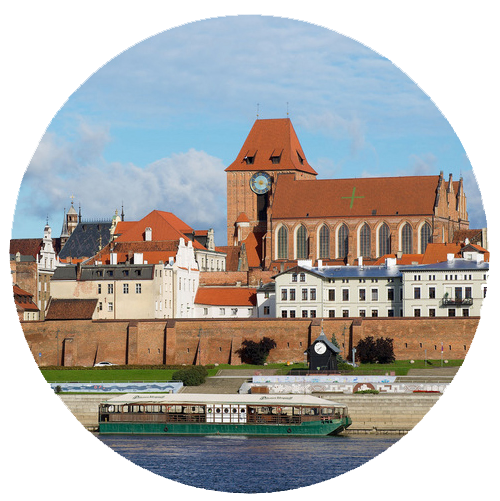
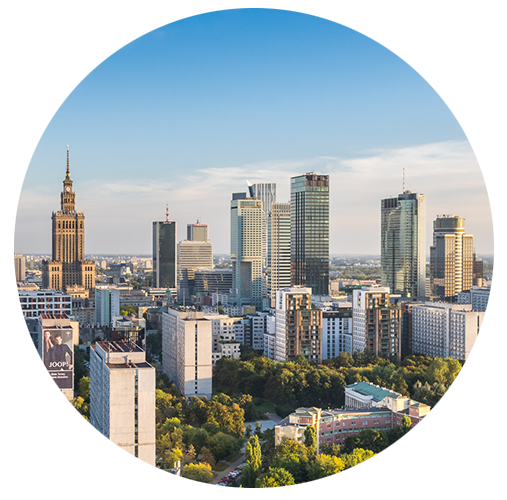
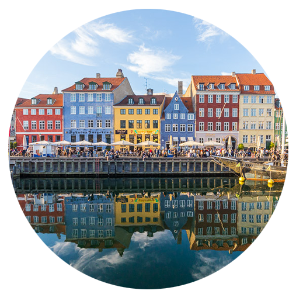

Hi, my name is Jan Włoczewski
I am 22 years old and I am a student at the international line of Multimedia Design.
I was born in Toruń, Poland, in 1995. After high school, I moved to Warsaw to study at Warsaw University of Technology, however, after 2 years I wasn't satisfied with the chosen line and I decided to move to Copenhagen.
  My interests moved towards graphics, so I decided to apply to KEA, where now I am improving my skills in coding and graphic design.
I am sport enthusiast. I often swim and, thanks to living in Denmark, cycle. I love mountains and hiking is one of my favourite ways to spend free time. I also like football, history, tv series and movies.